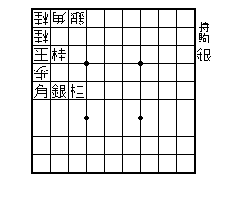
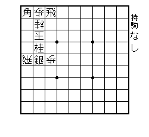
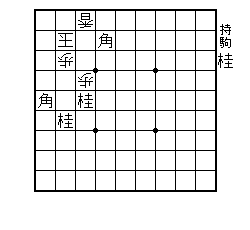
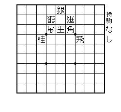
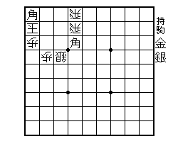
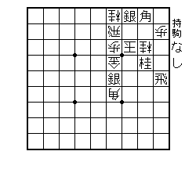
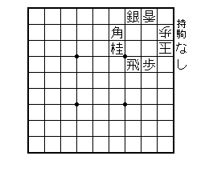
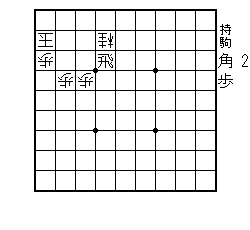
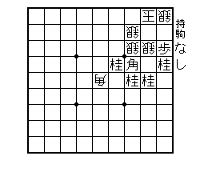

るしの詰め将棋、EISABUROU シリーズ。第１弾 「 E 」第２弾 「 I 」
初めて１ヶ月ほどでこんなんに出来るもん？？？すごいぴょん。（笑）


るしの詰め将棋、EISABUROU シリーズ。第３弾・第４弾 「S」「A」
解けるかな？ S は２１手詰め！A は１１手詰め！るしに挑戦せよ＾＾
ヒント欲しい人はいまむーまで


るしの詰め将棋、EISAB.UROU シリーズ。第５弾・第６弾 「Ｂ.」「Ｕ」
解けるかな？ るしに挑戦せよ＾＾
ヒント欲しい人はいまむーまで

るしの詰め将棋、EISAB.UROU シリーズ。第７ 「Ｒ」
解けるかな？Ｒは２５手詰めだあ。 るしに挑戦せよ＾＾
ヒント欲しい人はいまむーまで

るしの詰め将棋、EISAB.UROU シリーズ。第８弾・第９弾 「Ｏ」「Ｕ」
解けるかな？ るしに挑戦せよ＾＾
ついに完成でーす。詰め将棋作り始めて１ヶ月。余詰めなしの完成品を
９つ作り上げたるしさんに拍手＾＾このＯが一番のお気に入りでときや
すかったです。最後のＵは１５手詰め。駒が少ないけど難しかったなあ。
ねずさん解けるかな？(笑）
ヒント欲しい人はいまむーまで


桂ふぉー VS 銀 ふぉー
